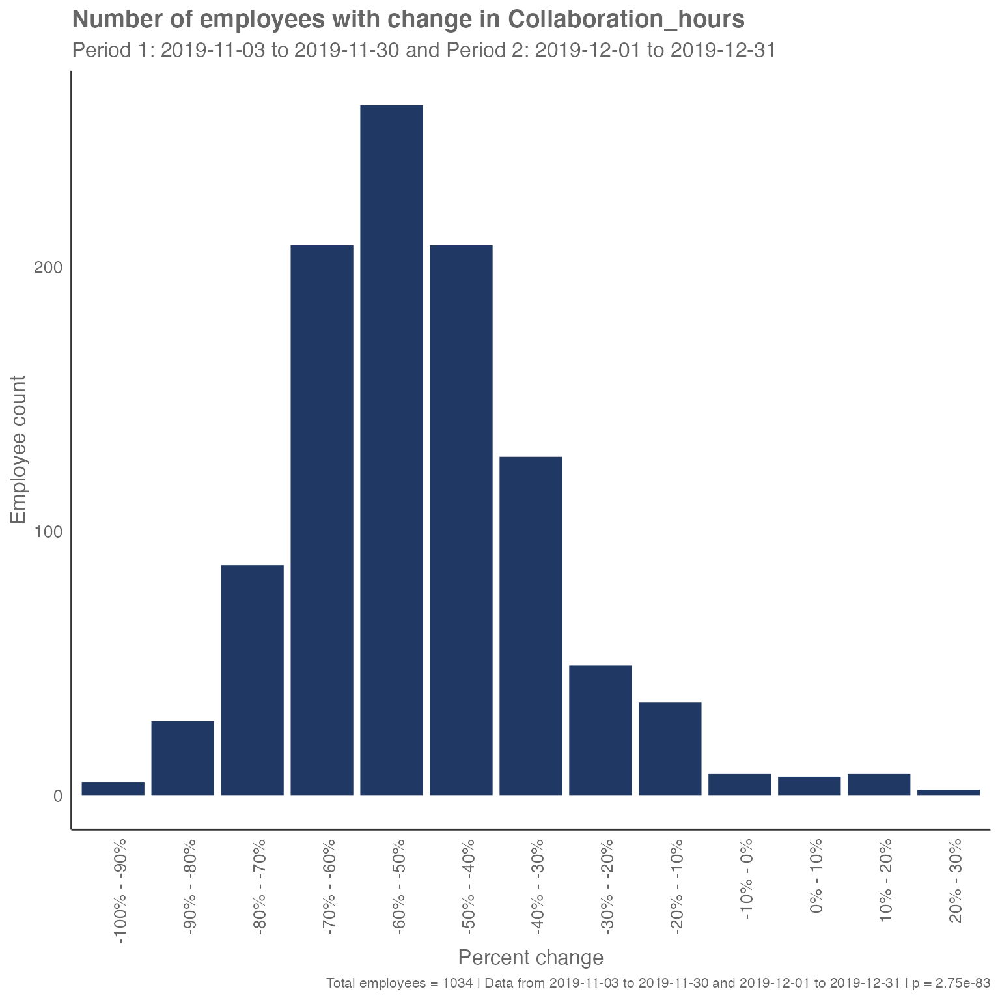

How to identify changes over time in Workplace Analytics data
Mark Powers
2021-01-15
Source:vignettes/Change-over-time.Rmd
Change-over-time.RmdWhat has changed?
What has changed?
Business leaders often want to understand how their business is performing so they can make data-driven decisions about how to work more efficiently and effectively. Identifying what has changed, and why, can lead business leaders to update their operations and strategy to improve business results. This means that one of the most common analytical asks for Workplace Analytics analysts is, “What has changed?” The wpa package offers two techniques to identify significant changes in Workplace Analytics metrics over time: period_change() and IV_by_period().
For example, leaders at Contoso Corporation might be interested in how overall levels of digital collaboration are changing as they approach the end-of-year holidays. We can look at this question with the built-in sq_data dataset and the Collaboration_hours metric to show how an analyst could answer that.
First, let’s load the wpa package:
sq_data %>%
create_line(hrvar = "Domain",
metric = "Collaboration_hours")This chart provides us with a good starting point, as we can see a change in collaboration activity throughout. We will study the change between November and December. The next step is to refine that insight, which we’ll do with the period_change() function.
period_change()
The period_change() function returns a histogram of how many people changed a specific metric over two time periods, the before and after periods. It calculates the number or percentage of people whose metric changed by a particular percentage, and then helps us understand whether this overall change is statistically significant.
In the scenario with Contoso, we can see that collaboration hours step down throughout November and December – but is this significant?
First, let’s compare the change in collaboration for the first two weeks of November.
sq_data %>%
period_change(
compvar = "Collaboration_hours",
before_start = "2019-11-03",
before_end = "2019-11-09",
after_start = "2019-11-10",
after_end = "2019-11-16"
)
This function compares the collaboration hours of the population between the before period (week of November 3) and the after period (week of November 10). It places each employee’s data into bins according to how much their collaboration time changed between the two periods. For example, we see in the figure above that 107 people had their collaboration hours decrease by between 0 and 10%. We also see that 67 had their collaboration hours increase by between 0 and 10%. These 174 people had a total collaboration time during the second week of November that was within 10% of their collaboration time during the first week of November (so, it was more or less stable).
In this way, we end up with a distribution of how employee collaboration hours have changed between the two periods. As the distribution appears relatively normal and centered on a mode of 30% to -20%, we see that most employees had their collaboration hours decrease, even though a spike of employees, seen in the bar at the far right, had their collaboration hours increase by at least 90 percent.
We also get a p-value (shown at the right of the image caption) that tells us whether the two samples are statistically significantly different. The smaller the value, the more significant the differences. Typically, we look for a significance level of less than 0.05, but the exact threshold you pick depends on how sure you need to be. In this case, the p-value of 0.0629 is too large for us to be sure at the 95% confidence level that there has been a change in collaboration activity between the first two weeks of November.
However, if we compare November to December, we see a significant difference in collaboration hours:
sq_data %>%
period_change(
compvar = "Collaboration_hours",
before_start = "2019-11-03",
before_end = "2019-11-30",
after_start = "2019-12-01",
after_end = "2019-12-31"
)
The p-value here is close to zero. This change is unsurprising as we saw collaboration hours decrease sharply during the first week of December.
This analysis can be helpful because looking casually at how the mean has changed might not uncover significant changes in behavior. For example, if, in comparing two months of data, we saw that the average collaboration hours stayed the same, we would also want to see the underlying distribution to know whether that means everyone was collaborating for the same length of time (at one extreme), whether half the employees had stopped collaborating and half had doubled their collaboration, or something in between.
IV_by_period()
While period_change() is great for looking at a specific collaboration metric, we sometimes want to use wpa to tell us all the metrics that have changed significantly. The IV_by_period() function does just that by using the Information Value method (see more here: How to identify potential predictors for survey results using information value. With over 60 metrics in the sq_data dataset, it might not be practical to look at each metric individually, and this is where the IV_by_period() function can be helpful.
Essentially, the IV_by_period() function tells us which metrics in the dataset best differentiate the before and after time periods. The higher the Information Value, the more different that metric is between the two periods (because it better explains the difference between those two groups).
Looking at the change between the first two weeks of November, we see very small Information Values. This tells us that the collaboration activity is very similar between those two weeks.
sq_data %>%
IV_by_period(
before_start = "2019-11-03",
before_end = "2019-11-09",
after_start = "2019-11-10",
after_end = "2019-11-16"
)
#> Variable IV
#> 1 After_hours_meeting_hours 4.063198e-02
#> 2 After_hours_collaboration_hours 3.214857e-02
#> 3 After_hours_email_hours 2.827746e-02
#> 4 After_hours_instant_messages 2.646030e-02
#> 5 Instant_messages_sent 2.390204e-02
#> 6 Generated_workload_email_recipients 2.351152e-02
#> 7 Total_emails_sent_during_meeting 2.253198e-02
#> 8 Meetings_with_manager 2.037033e-02
#> 9 Open_1_hour_block 2.031148e-02
#> 10 Workweek_span 1.875483e-02
#> 11 Email_hours 1.847501e-02
#> 12 Low_quality_meeting_hours 1.840299e-02
#> 13 Instant_Message_hours 1.832036e-02
#> 14 Generated_workload_instant_messages_hours 1.807253e-02
#> 15 Conflicting_meeting_hours 1.673358e-02
#> 16 Meetings 1.621851e-02
#> 17 Meeting_hours_during_working_hours 1.607176e-02
#> 18 Meeting_hours_with_manager 1.580855e-02
#> 19 Meeting_hours 1.547852e-02
#> 20 Multitasking_meeting_hours 1.512573e-02
#> 21 Collaboration_hours 1.431442e-02
#> 22 Time_in_self_organized_meetings 1.366691e-02
#> 23 Generated_workload_email_hours 1.362824e-02
#> 24 Call_hours 1.345850e-02
#> 25 Working_hours_in_calls 1.338040e-02
#> 26 Working_hours_email_hours 1.317128e-02
#> 27 Generated_workload_instant_messages_recipients 1.222653e-02
#> 28 Working_hours_instant_messages 1.194240e-02
#> 29 After_hours_in_calls 1.160868e-02
#> 30 Collaboration_hours_external 1.105485e-02
#> 31 Redundant_meeting_hours__organizational_ 1.065584e-02
#> 32 Total_focus_hours 1.064046e-02
#> 33 Emails_sent 1.023741e-02
#> 34 Generated_workload_meeting_hours 1.021543e-02
#> 35 External_network_size 9.104338e-03
#> 36 Open_2_hour_blocks 8.839182e-03
#> 37 Internal_network_size 8.784474e-03
#> 38 Working_hours_collaboration_hours 8.124579e-03
#> 39 Generated_workload_call_participants 7.956155e-03
#> 40 Generated_workload_call_hours 6.901190e-03
#> 41 Generated_workload_calls_organized 6.404576e-03
#> 42 Total_calls 4.848446e-03
#> 43 Meetings_with_manager_1_on_1 4.710288e-03
#> 44 Generated_workload_meetings_organized 4.059213e-03
#> 45 Generated_workload_meeting_attendees 3.425110e-03
#> 46 Meeting_hours_with_manager_1_on_1 3.214828e-03
#> 47 Networking_outside_company 1.235318e-03
#> 48 Manager_coaching_hours_1_on_1 2.339200e-04
#> 49 Networking_outside_organization 4.851778e-06
#> 50 Meetings_with_skip_level 0.000000e+00
#> 51 Meeting_hours_with_skip_level 0.000000e+00
#> 52 Redundant_meeting_hours__lower_level_ 0.000000e+00
#> 53 Layer 0.000000e+00
#> 54 HourlyRate 0.000000e+00If we look at the differences between November and December, we see higher Information Values that reflect a big difference in collaboration activity. In this case we see that the Internal Network Size has an Information Value score of 0.28, which means that it is moderately predictive of the difference between the two months. We also see large values for Email and Instant Message activities. Although the Information Value does not tell us how these metrics changed, it provides a good starting point for further analysis to determine what changed in those metrics.
sq_data %>%
IV_by_period(
before_start = "2019-11-03",
before_end = "2019-11-30",
after_start = "2019-12-01",
after_end = "2019-12-31"
)
#> Variable IV
#> 1 Internal_network_size 2.784844e-01
#> 2 Instant_Message_hours 1.748171e-01
#> 3 Generated_workload_instant_messages_hours 1.691158e-01
#> 4 Instant_messages_sent 1.598580e-01
#> 5 Email_hours 1.504853e-01
#> 6 Emails_sent 1.480856e-01
#> 7 After_hours_instant_messages 1.468005e-01
#> 8 Working_hours_instant_messages 1.433882e-01
#> 9 Working_hours_email_hours 1.322731e-01
#> 10 Generated_workload_email_hours 1.153380e-01
#> 11 After_hours_email_hours 1.074878e-01
#> 12 Collaboration_hours 9.827300e-02
#> 13 Generated_workload_email_recipients 9.395048e-02
#> 14 Workweek_span 9.287183e-02
#> 15 Total_emails_sent_during_meeting 8.553893e-02
#> 16 After_hours_collaboration_hours 6.378512e-02
#> 17 Working_hours_collaboration_hours 5.908107e-02
#> 18 Meetings 5.638114e-02
#> 19 Generated_workload_instant_messages_recipients 5.447217e-02
#> 20 Open_2_hour_blocks 4.511741e-02
#> 21 Open_1_hour_block 4.380020e-02
#> 22 Total_focus_hours 4.260523e-02
#> 23 Total_calls 4.214366e-02
#> 24 Low_quality_meeting_hours 4.112178e-02
#> 25 Meeting_hours 4.061246e-02
#> 26 Collaboration_hours_external 3.978445e-02
#> 27 Meeting_hours_during_working_hours 3.890096e-02
#> 28 Meetings_with_manager 3.833501e-02
#> 29 Conflicting_meeting_hours 3.738846e-02
#> 30 Call_hours 3.666387e-02
#> 31 Working_hours_in_calls 3.595363e-02
#> 32 Multitasking_meeting_hours 3.402278e-02
#> 33 External_network_size 3.123240e-02
#> 34 Redundant_meeting_hours__organizational_ 2.823249e-02
#> 35 Generated_workload_meetings_organized 2.525733e-02
#> 36 Meeting_hours_with_manager 2.346153e-02
#> 37 Generated_workload_calls_organized 1.937772e-02
#> 38 Generated_workload_call_participants 1.926359e-02
#> 39 Generated_workload_meeting_attendees 1.915824e-02
#> 40 Generated_workload_call_hours 1.901450e-02
#> 41 Time_in_self_organized_meetings 1.859178e-02
#> 42 Generated_workload_meeting_hours 1.373804e-02
#> 43 Networking_outside_company 1.322977e-02
#> 44 After_hours_meeting_hours 1.225282e-02
#> 45 After_hours_in_calls 9.634026e-03
#> 46 Meetings_with_manager_1_on_1 6.262860e-03
#> 47 Meeting_hours_with_manager_1_on_1 5.465660e-03
#> 48 Manager_coaching_hours_1_on_1 1.357650e-03
#> 49 Networking_outside_organization 5.721805e-06
#> 50 Meetings_with_skip_level 0.000000e+00
#> 51 Meeting_hours_with_skip_level 0.000000e+00
#> 52 Redundant_meeting_hours__lower_level_ 0.000000e+00
#> 53 Layer 0.000000e+00
#> 54 HourlyRate 0.000000e+00We can use this method to answer the Contoso leadership’s question about how collaboration activity has changed. Now that we know the top metrics that have changed, we can look at each of them in more detail, including with the period_change() function, to more fully describe how collaboration differs going into the end of the year.
Conclusion
We’ve introduced two functions in the wpa package that help analysts identify changes in collaboration behavior over time. period_change() can identify the changes in a specific metric, while IV_by_period() will help the analyst find the metrics with the biggest changes.
Feedback
Hope you found this useful! If you have any suggestions or feedback, please visit https://github.com/microsoft/wpa/issues.